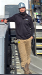

At Virginia EcoMechanical HVAC-R, we believe comfort, reliability, and professionalism should never be compromised. With over 12 years of experience in the HVAC-R industry, we proudly provide high-quality heating, ventilation, air conditioning, and refrigeration services to homeowners and businesses throughout Virginia.
Our company was founded on a simple principle: deliver exceptional service and workmanship that customers can trust. From routine maintenance and repairs to complete system installations and upgrades, we approach every project with attention to detail, technical expertise, and a commitment to doing the job right the first time.
We understand that your comfort is essential year-round. Whether you're facing the summer heat, winter cold, or need dependable refrigeration solutions for your business, our team is dedicated to providing efficient, reliable, and cost-effective solutions tailored to your needs.
Our mission is to provide outstanding service and year-round comfort for homeowners and businesses through professional HVAC-R solutions, quality craftsmanship, and dependable customer care.
At Virginia EcoMechanical HVAC-R, we're more than just a service provider—we're your trusted partner in creating comfortable, efficient, and dependable indoor environments. We take pride in building lasting relationships with our customers through integrity, professionalism, and exceptional results.
When you choose Virginia EcoMechanical HVAC-R, you're choosing a company dedicated to keeping your home or business comfortable, efficient, and operating at its best every season of the year.